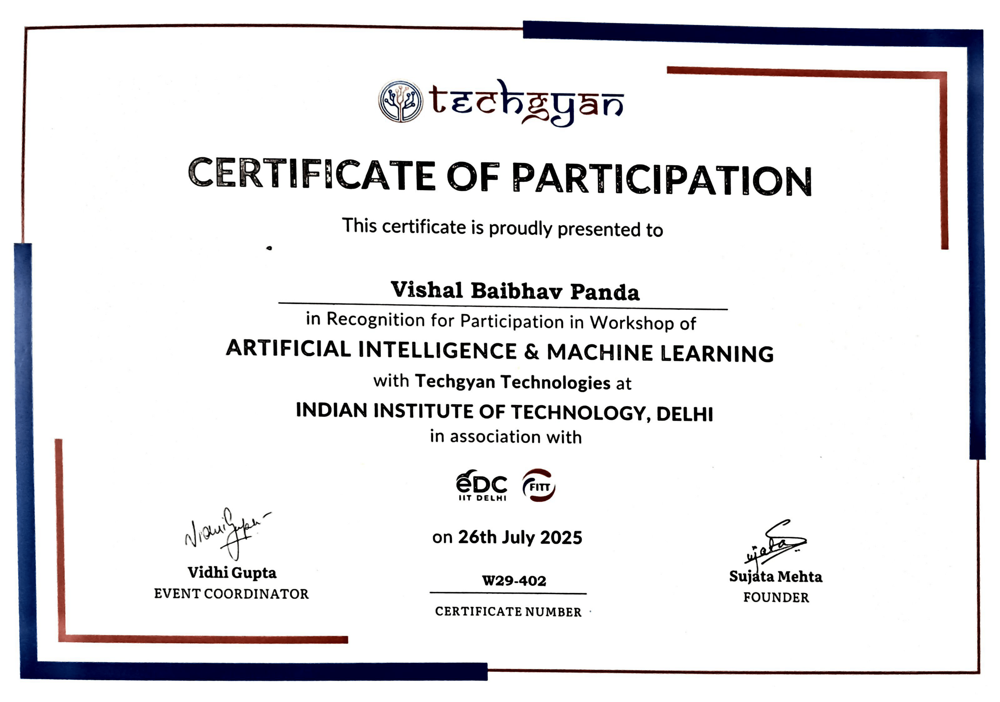

About Me & The Project
Hello! I'm Vishal, the creator of this Human Presence Detector project, hailing from New Delhi. This endeavor began as a significant part of a hackathon competition. As the Team Captain, I spearheaded the entire development process, leading the efforts to bring this project to fruition.
This project is designed to detect the presence of human beings in an area. While currently a demonstration, its potential applications extend to serious security scenarios, offering a simple yet effective solution for presence detection.
Technologies Used:
- TensorFlow.js: For running machine learning models directly in the browser.
- Teachable Machine: For easily training custom image classification models.
- Generative AI Integration: Leveraged AI to implement complex functionalities and enhance the web development process.
- HTML5, CSS3, JavaScript: For the web application's structure, styling, and interactivity.
- WebRTC API: For accessing the user's webcam feed.
Hackathon Achievement
I'm proud to share that this project earned a recognition in a recent hackathon! This award validates the effectiveness and innovation of the project.

Participation Recognition
My dedication was further acknowledged with a participation certificate, representing my commitment and effort throughout the competition.
